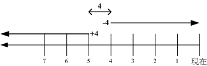

文件的搜寻可就厉害了！因为我们常常需要知道那个文件放在哪里，才能够对该文件进行一些修改或维护等动作。
有些时候某些软件配置档的档名是不变的，但是各 distribution 放置的目录则不同。
此时就得要利用一些搜寻命令将该配置档的完整档名捉出来，这样才能修改嘛！您说是吧！^_^
我们知道在终端机模式当中，连续输入两次[tab]按键就能够知道使用者有多少命令可以下达。
那你知不知道这些命令的完整档名放在哪里？举例来说，ls 这个常用的命令放在哪里呢？
就透过 which 或 type 来找寻吧！
[root@www ~]# which [-a] command
选项或参数：
-a ：将所有由 PATH 目录中可以找到的命令均列出，而不止第一个被找到的命令名称
范例一：分别用root与一般帐号搜寻 ifconfig 这个命令的完整档名
[root@www ~]# which ifconfig
/sbin/ifconfig <==用 root 可以找到正确的运行档名喔！
[root@www ~]# su - vbird <==切换身份成为 vbird 去！
[vbird@www ~]$ which ifconfig
/usr/bin/which: no ifconfig in (/usr/kerberos/bin:/usr/local/bin:/bin:/usr/bin
:/home/vbird/bin) <==见鬼了！竟然一般身份帐号找不到！
# 因为 which 是根据使用者所配置的 PATH 变量内的目录去搜寻可运行档的！所以，
# 不同的 PATH 配置内容所找到的命令当然不一样啦！因为 /sbin 不在 vbird 的
# PATH 中，找不到也是理所当然的啊！了乎？
[vbird@www ~]$ exit <==记得将身份切换回原本的 root
范例二：用 which 去找出 which 的档名为何？
[root@www ~]# which which
alias which='alias | /usr/bin/which --tty-only --read-alias --show-dot '
/usr/bin/which
# 竟然会有两个 which ，其中一个是 alias 这玩意儿呢！那是啥？
# 那就是所谓的『命令别名』，意思是输入 which 会等於后面接的那串命令啦！
# 更多的数据我们会在 bash 章节中再来谈的！
范例三：请找出 cd 这个命令的完整档名
[root@www ~]# which cd
/usr/bin/which: no cd in (/usr/kerberos/sbin:/usr/kerberos/bin:/usr/local/sbin
:/usr/local/bin:/sbin:/bin:/usr/sbin:/usr/bin:/root/bin)
# 瞎密？怎么可能没有 cd ，我明明就能够用 root 运行 cd 的啊！
|
这个命令是根据『PATH』这个环境变量所规范的路径，去搜寻『运行档』的档名～
所以，重点是找出『运行档』而已！且 which 后面接的是『完整档名』喔！若加上 -a
选项，则可以列出所有的可以找到的同名运行档，而非仅显示第一个而已！
最后一个范例最有趣，怎么 cd 这个常用的命令竟然找不到啊！为什么呢？这是因为 cd 是『bash 内建的命令』啦！
但是 which 默认是找 PATH 内所规范的目录，所以当然一定找不到的啊！那怎办？没关系！我们可以透过 type 这个命令喔！
关於 type 的用法我们将在 第十一章的 bash 再来谈！
再来谈一谈怎么搜寻文件吧！在 Linux 底下也有相当优异的搜寻命令呦！通常 find 不很常用的！因为速度慢之外，
也很操硬盘！通常我们都是先使用 whereis 或者是 locate 来检查，如果真的找不到了，才以 find 来搜寻呦！
为什么呢？因为 whereis 与 locate 是利用数据库来搜寻数据，所以相当的快速，而且并没有实际的搜寻硬盘，
比较省时间啦！
[root@www ~]# whereis [-bmsu] 文件或目录名
选项与参数：
-b :只找 binary 格式的文件
-m :只找在说明档 manual 路径下的文件
-s :只找 source 来源文件
-u :搜寻不在上述三个项目当中的其他特殊文件
范例一：请用不同的身份找出 ifconfig 这个档名
[root@www ~]# whereis ifconfig
ifconfig: /sbin/ifconfig /usr/share/man/man8/ifconfig.8.gz
[root@www ~]# su - vbird <==切换身份成为 vbird
[vbird@www ~]$ whereis ifconfig <==找到同样的结果喔！
ifconfig: /sbin/ifconfig /usr/share/man/man8/ifconfig.8.gz
[vbird@www ~]$ exit <==回归身份成为 root 去！
# 注意看，明明 which 一般使用者找不到的 ifconfig 却可以让 whereis 找到！
# 这是因为系统真的有 ifconfig 这个『文件』，但是使用者的 PATH 并没有加入 /sbin
# 所以，未来你找不到某些命令时，先用文件搜寻命令找找看再说！
范例二：只找出跟 passwd 有关的『说明文件』档名(man page)
[root@www ~]# whereis -m passwd
passwd: /usr/share/man/man1/passwd.1.gz /usr/share/man/man5/passwd.5.gz
|
等一下我们会提到 find 这个搜寻命令， find 是很强大的搜寻命令，但时间花用的很大！
(因为 find 是直接搜寻硬盘，为如果你的硬盘比较老旧的话，嘿嘿！有的等！)
这个时候 whereis 就相当的好用了！另外， whereis 可以加入选项来找寻相关的数据，
例如如果你是要找可运行档( binary )那么加上 -b 就可以啦！
如果不加任何选项的话，那么就将所有的数据列出来罗！
那么 whereis 到底是使用什么咚咚呢？为何搜寻的速度会比 find 快这么多？
其实那也没有什么！这是因为 Linux 系统会将系统内的所有文件都记录在一个数据库文件里面，
而当使用 whereis 或者是底下要说的 locate 时，都会以此数据库文件的内容为准，
因此，有的时后你还会发现使用这两个运行档时，会找到已经被杀掉的文件！
而且也找不到最新的刚刚创建的文件呢！这就是因为这两个命令是由数据库当中的结果去搜寻文件的所在啊！
更多与这个数据库有关的说明，请参考下列的 locate 命令。
[root@www ~]# locate [-ir] keyword
选项与参数：
-i ：忽略大小写的差异；
-r ：后面可接正规表示法的显示方式
范例一：找出系统中所有与 passwd 相关的档名
[root@www ~]# locate passwd
/etc/passwd
/etc/passwd-
/etc/news/passwd.nntp
/etc/pam.d/passwd
....(底下省略)....
|
这个 locate 的使用更简单，直接在后面输入『文件的部分名称』后，就能够得到结果。
举上面的例子来说，我输入 locate passwd ，那么在完整档名 (包含路径名称) 当中，只要有 passwd 在其中，
就会被显示出来的！这也是个很方便好用的命令，如果你忘记某个文件的完整档名时～～
但是，这个东西还是有使用上的限制呦！为什么呢？你会发现使用 locate 来寻找数据的时候特别的快，
这是因为 locate 寻找的数据是由『已创建的数据库 /var/lib/mlocate/』
里面的数据所搜寻到的，所以不用直接在去硬盘当中存取数据，呵呵！当然是很快速罗！
那么有什么限制呢？就是因为他是经由数据库来搜寻的，而数据库的创建默认是在每天运行一次
(每个 distribution 都不同，CentOS 5.x 是每天升级数据库一次！)，所以当你新创建起来的文件，
却还在数据库升级之前搜寻该文件，那么 locate 会告诉你『找不到！』呵呵！因为必须要升级数据库呀！
那能否手动升级数据库哪？当然可以啊！升级 locate 数据库的方法非常简单，直接输入『 updatedb 』就可以了！
updatedb 命令会去读取 /etc/updatedb.conf 这个配置档的配置，然后再去硬盘里面进行搜寻档名的动作，
最后就升级整个数据库文件罗！因为 updatedb 会去搜寻硬盘，所以当你运行 updatedb 时，可能会等待数分钟的时间喔！
- updatedb：根据 /etc/updatedb.conf 的配置去搜寻系统硬盘内的档名，并升级 /var/lib/mlocate 内的数据库文件；
- locate：依据 /var/lib/mlocate 内的数据库记载，找出使用者输入的关键字档名。
[root@www ~]# find [PATH] [option] [action]
选项与参数：
1. 与时间有关的选项：共有 -atime, -ctime 与 -mtime ，以 -mtime 说明
-mtime n ：n 为数字，意义为在 n 天之前的『一天之内』被更动过内容的文件；
-mtime +n ：列出在 n 天之前(不含 n 天本身)被更动过内容的文件档名；
-mtime -n ：列出在 n 天之内(含 n 天本身)被更动过内容的文件档名。
-newer file ：file 为一个存在的文件，列出比 file 还要新的文件档名
范例一：将过去系统上面 24 小时内有更动过内容 (mtime) 的文件列出
[root@www ~]# find / -mtime 0
# 那个 0 是重点！0 代表目前的时间，所以，从现在开始到 24 小时前，
# 有变动过内容的文件都会被列出来！那如果是三天前的 24 小时内？
# find / -mtime 3 有变动过的文件都被列出的意思！
范例二：寻找 /etc 底下的文件，如果文件日期比 /etc/passwd 新就列出
[root@www ~]# find /etc -newer /etc/passwd
# -newer 用在分辨两个文件之间的新旧关系是很有用的！
|
时间参数真是挺有意思的！我们现在知道 atime, ctime 与 mtime 的意义，如果你想要找出一天内被更动过的文件名称，
可以使用上述范例一的作法。但如果我想要找出『4天内被更动过的文件档名』呢？那可以使用『
find /var -mtime -4 』。那如果是『4天前的那一天』就用『
find /var -mtime 4 』。有没有加上『+,
-』差别很大喔！我们可以用简单的图示来说明一下：

图5.2.1、find 相关的时间参数意义
图中最右边为目前的时间，越往左边则代表越早之前的时间轴啦。由图5.2.1我们可以清楚的知道：
- +4代表大於等於5天前的档名：ex> find /var -mtime +4
- -4代表小於等於4天内的文件档名：ex> find /var -mtime -4
- 4则是代表4-5那一天的文件档名：ex> find /var -mtime 4
非常有趣吧！你可以在 /var/ 目录下搜寻一下，感受一下输出文件的差异喔！再来看看其他 find 的用法吧！
选项与参数：
2. 与使用者或群组名称有关的参数：
-uid n ：n 为数字，这个数字是使用者的帐号 ID，亦即 UID ，这个 UID 是记录在
/etc/passwd 里面与帐号名称对应的数字。这方面我们会在第四篇介绍。
-gid n ：n 为数字，这个数字是群组名称的 ID，亦即 GID，这个 GID 记录在
/etc/group，相关的介绍我们会第四篇说明～
-user name ：name 为使用者帐号名称喔！例如 dmtsai
-group name：name 为群组名称喔，例如 users ；
-nouser ：寻找文件的拥有者不存在 /etc/passwd 的人！
-nogroup ：寻找文件的拥有群组不存在於 /etc/group 的文件！
当你自行安装软件时，很可能该软件的属性当中并没有文件拥有者，
这是可能的！在这个时候，就可以使用 -nouser 与 -nogroup 搜寻。
范例三：搜寻 /home 底下属於 vbird 的文件
[root@www ~]# find /home -user vbird
# 这个东西也很有用的～当我们要找出任何一个使用者在系统当中的所有文件时，
# 就可以利用这个命令将属於某个使用者的所有文件都找出来喔！
范例四：搜寻系统中不属於任何人的文件
[root@www ~]# find / -nouser
# 透过这个命令，可以轻易的就找出那些不太正常的文件。
# 如果有找到不属於系统任何人的文件时，不要太紧张，
# 那有时候是正常的～尤其是你曾经以原始码自行编译软件时。
|
如果你想要找出某个使用者在系统底下创建了啥咚咚，使用上述的选项与参数，就能够找出来啦！
至於那个 -nouser 或 -nogroup 的选项功能中，除了你自行由网络上面下载文件时会发生之外，
如果你将系统里面某个帐号删除了，但是该帐号已经在系统内创建很多文件时，就可能会发生无主孤魂的文件存在！
此时你就得使用这个 -nouser 来找出该类型的文件罗！
选项与参数：
3. 与文件权限及名称有关的参数：
-name filename：搜寻文件名称为 filename 的文件；
-size [+-]SIZE：搜寻比 SIZE 还要大(+)或小(-)的文件。这个 SIZE 的规格有：
c: 代表 byte， k: 代表 1024bytes。所以，要找比 50KB
还要大的文件，就是『 -size +50k 』
-type TYPE ：搜寻文件的类型为 TYPE 的，类型主要有：一般正规文件 (f),
装置文件 (b, c), 目录 (d), 连结档 (l), socket (s),
及 FIFO (p) 等属性。
-perm mode ：搜寻文件权限『刚好等於』 mode 的文件，这个 mode 为类似 chmod
的属性值，举例来说， -rwsr-xr-x 的属性为 4755 ！
-perm -mode ：搜寻文件权限『必须要全部囊括 mode 的权限』的文件，举例来说，
我们要搜寻 -rwxr--r-- ，亦即 0744 的文件，使用 -perm -0744，
当一个文件的权限为 -rwsr-xr-x ，亦即 4755 时，也会被列出来，
因为 -rwsr-xr-x 的属性已经囊括了 -rwxr--r-- 的属性了。
-perm +mode ：搜寻文件权限『包含任一 mode 的权限』的文件，举例来说，我们搜寻
-rwxr-xr-x ，亦即 -perm +755 时，但一个文件属性为 -rw-------
也会被列出来，因为他有 -rw.... 的属性存在！
范例五：找出档名为 passwd 这个文件
[root@www ~]# find / -name passwd
# 利用这个 -name 可以搜寻档名啊！
范例六：找出 /var 目录下，文件类型为 Socket 的档名有哪些？
[root@www ~]# find /var -type s
# 这个 -type 的属性也很有帮助喔！尤其是要找出那些怪异的文件，
# 例如 socket 与 FIFO 文件，可以用 find /var -type p 或 -type s 来找！
范例七：搜寻文件当中含有 SGID 或 SUID 或 SBIT 的属性
[root@www ~]# find / -perm +7000
# 所谓的 7000 就是 ---s--s--t ，那么只要含有 s 或 t 的就列出，
# 所以当然要使用 +7000 ，使用 -7000 表示要含有 ---s--s--t 的所有三个权限，
# 因此，就是 +7000 ～了乎？
|
上述范例中比较有趣的就属 -perm 这个选项啦！他的重点在找出特殊权限的文件罗！
我们知道 SUID 与 SGID 都可以配置在二进位程序上，假设我想要找出来 /bin, /sbin 这两个目录下，
只要具有 SUID 或 SGID 就列出来该文件，你可以这样做：
[root@www ~]# find /bin /sbin -perm +6000
|
因为 SUID 是 4 分，SGID 2 分，总共为 6 分，因此可用 +6000 来处理这个权限！
至於 find 后面可以接多个目录来进行搜寻！另外， find 本来就会搜寻次目录，这个特色也要特别注意喔！
最后，我们再来看一下 find 还有什么特殊功能吧！
选项与参数：
4. 额外可进行的动作：
-exec command ：command 为其他命令，-exec 后面可再接额外的命令来处理搜寻到
的结果。
-print ：将结果列印到萤幕上，这个动作是默认动作！
范例八：将上个范例找到的文件使用 ls -l 列出来～
[root@www ~]# find / -perm +7000 -exec ls -l {} \;
# 注意到，那个 -exec 后面的 ls -l 就是额外的命令，命令不支持命令别名，
# 所以仅能使用 ls -l 不可以使用 ll 喔！注意注意！
范例九：找出系统中，大於 1MB 的文件
[root@www ~]# find / -size +1000k
# 虽然在 man page 提到可以使用 M 与 G 分别代表 MB 与 GB，
# 不过，俺却试不出来这个功能～所以，目前应该是仅支持到 c 与 k 吧！
|
find 的特殊功能就是能够进行额外的动作(action)。我们将范例八的例子以图解来说明如下：
图5.2.2、find 相关的额外动作
该范例中特殊的地方有 {} 以及 \; 还有 -exec 这个关键字，这些东西的意义为：
- {} 代表的是『由 find 找到的内容』，如上图所示，find 的结果会被放置到 {} 位置中；
- -exec 一直到 \; 是关键字，代表 find 额外动作的开始 (-exec) 到结束 (\;) ，在这中间的就是 find 命令内的额外动作。
在本例中就是『 ls -l {} 』罗！
- 因为『 ; 』在 bash 环境下是有特殊意义的，因此利用反斜线来跳脱。
透过图 5.2.2 你应该就比较容易了解 -exec 到 \; 之间的意义了吧！
如果你要找的文件是具有特殊属性的，例如 SUID 、文件拥有者、文件大小等等，
那么利用 locate 是没有办法达成你的搜寻的！此时 find 就显的很重要啦！
另外，find 还可以利用万用字节来找寻档名呢！举例来说，你想要找出 /etc 底下档名包含 httpd 的文件，
那么你就可以这样做：
[root@www ~]# find /etc -name '*httpd*'
|
不但可以指定搜寻的目录(连同次目录)，并且可以利用额外的选项与参数来找到最正确的档名！真是好好用！
不过由於 find 在寻找数据的时后相当的操硬盘！所以没事情不要使用 find 啦！有更棒的命令可以取代呦！那就是上面提到的
whereis 与 locate 罗！